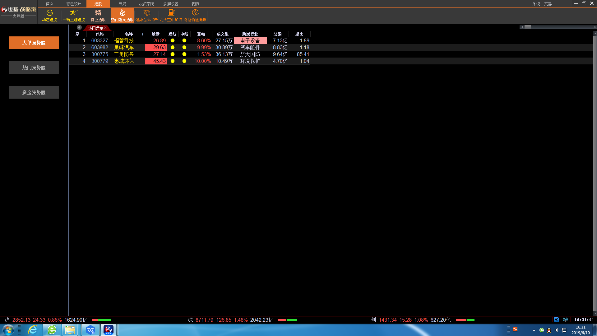

3.8热门强龙选股
热门强势是一种跟庄选股策略，主要用来精选热门龙头股。下设有3个选股方案：大单强势股、热门强势股、资金强势股。大单强势股是蓝黄带特有的以超级大单成交为核心的选股方案。能够选出市场中多数游资主力动作很大的短线强势股。通过服务器运算选出后，发送至客户端形成股票池。热门强势股是蓝黄带特有的以大单成交为核心的选股方案，能够选出市场中私募、小型游资炒作的短线强势股。资金强势股是蓝黄带特有的以资金流入为核心的选股方案，选择的股票具有持久上涨能力。
主要用途：
捕捉市场中短线强势，市场中热度较高的活跃股。
使用方法：
在热门强势三个选项中任意一个用鼠标点击后，即可自动精选出符合当前选股条件的个股。也可复合精选，即在大单强势股、热门强势股、资金强势股同时点击，三步复合精选，选股成功率会更高些。
